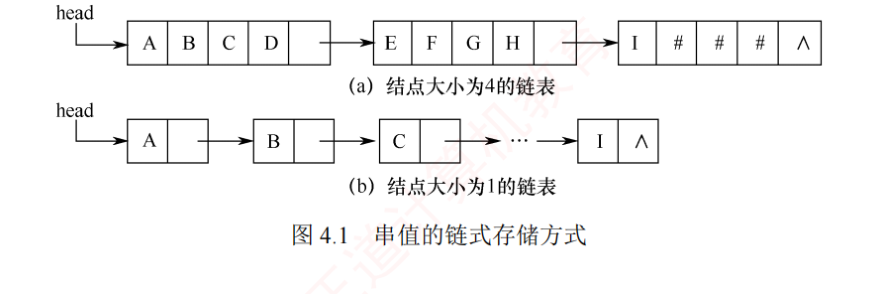

← 返回 408 复盘中心
怎么读这一页：正文是书上的内容，我只做了
结构重排和取舍；批注分五色，对应「筛 → 挖 → 串」三个动作：
必记结论（书上就有、必须记住）、
我的补讲（挖潜台词：
书上说 X → 真正在说 Y → 所以能考 Z）、
陷阱、
知识串联（这个点在别章、别科的哪里还会出现）、
背景灰化（明确授权你 3 分钟带过的段落——
全是重点就等于没有重点）。
右侧
📄 p.N 点开跳到原书对应页；它是
溯源锚点（想看原书排版和多余例子时用），
不是「这里我没写，你自己去看」——考点内容本页已经讲全。
本章的字符对齐示意我
重画成了 HTML（扫描件那几张在暗色下发白且看不清），只有块链存储图是从原书直接裁的。
4.3 手算总攻是我加的一节（书上没有），里面的综合题按
「大题三层」写：
💭 思路（动手前看／卡壳时看）→
✍️ 考场卷面（自己写完再对照）→
📌 批注（对照完校对）。
看完思路就合上页面自己写，别直接翻卷面。
📄 p.109
本章定位
考纲内容：字符串模式匹配——统考大纲对本章只有这七个字。（本章为大纲第 6 章内容，王道根据读者建议单独成章。）
王道的复习提示：重点是理解 KMP 算法的原理、next 数组和 nextval 数组的推导过程。手工计算 next 数组时，可先求出部分匹配值表再进行转换，也可直接依据递推公式求解。
我的补讲 · 这一章的考点窄到只剩一个动作
15 页正文、14 道课后题，考点却窄得只剩一个：把 next / nextval 算对，把比较次数数对。
统考真题在本章只出过三种形态，全都能用同一套手算解决：2015（失配后 i、j 的新值）、2019（比较次数）、2024（nextval 的最长滑动距离）。
另外注意王道给 4.1 节打了 ✱ 号并加脚注「本节不在统考大纲范围，仅供学习参考」——串的定长顺序/堆分配/块链三种存储不会单独出题，扫一眼记住结论即可，火力全压 4.2。
⚠️ 这一块原先的标题写的是「性价比是全书最高的」，回炉时跑脚本查了八章真题分布，那句话是错的：论「分数 ÷ 页数」，ch8 排序 0.68、ch5 树 0.61、ch7 查找 0.61 都远高于本章的 0.20（下一块有全表）。本章真正的优势不是性价比，是「一次投入就到顶」——只有一个动作要练，练完就不用再回来。
我的补讲 · 全书真题密度最低的一章，恰恰是最便宜的 2 分
书上说：本章是大纲第 6 章内容、王道单独成章，考纲只有「字符串模式匹配」七个字。
潜台词是：我把练习系统八章的
exam 年份跑了一遍——
本章十七年只考过 3 次（2015、2019、2024），是八章里出现年份最少的一章，真题密度 3÷15 =
0.20 道/页，其余七章是 0.32～0.68。折算成期望收益，本章约
6 分 ÷ 17 年 ≈ 0.35 分/年。
| 章 | 页数 | 真题数 | 考过的年份数 | 真题/页 |
|---|
| ch3 栈队列与数组 | 46 | 27 | 17（零缺口） | 0.59 |
| ch5 树 | 70 | 43 | 17（零缺口） | 0.61 |
| ch8 排序 | 62 | 42 | 17（零缺口） | 0.68 |
| ch1 绪论 | 13 | 7 | 7 | 0.54 |
| ch4 串（本章） | 15 | 3 | 3（最少） | 0.20（最低） |
：这不是「可以不看」的理由，是
「只用一个下午、只练一件事」的理由——三道真题（2015 问失配后的 i、j；2019 问比较次数；2024 问最长滑动距离）
用的是同一张手算表，把 next / nextval 那张表算对，三种问法一次通吃。
只要考，就是白拿的 2 分；不练，就是白丢的 2 分。本章唯一该投的时间在
4.3 手算总攻。
知识串联 · 串就是「元素被限定为字符」的线性表
→ 数构 ch2 串的逻辑结构与线性表完全同构，ch2 的顺序表/单链表的一切结论对串原样成立——所以本章不用重学存储结构，只需记「差别在操作单位：线性表按单个元素操作，串按子串操作」。
→ 组原 ch2 字符与字符串在机器里就是一段连续字节（ASCII 一字符一字节、汉字两字节），组原考的「字符串在内存中怎么放、大端小端影不影响字符顺序」正是本章「定长顺序存储」的硬件视角。
→ 网络 ch6 应用层的 HTTP 请求行、SMTP 命令、DNS 域名，本质全是字符串；网络里「按 CRLF 切分首部」的动作就是本章的模式匹配 + 求子串。
一句话记牢：串是线性表的特例，不是新结构；本章真正的新东西只有 KMP 一个。
4.1 串的定义和实现（✱ 大纲外，扫读）
📄 p.109–110
背景 · 这一整节 3 分钟带过
王道给 4.1 打了 ✱ 号并加脚注「本节不在统考大纲范围，仅供学习参考」。4.1 的三小节里，只有下面四句话会以「一句话选择题」的形式出现：空格串 ≠ 空串、模式匹配 = 定位运算 Index、最小操作子集是哪五个、串与线性表的区别在操作单位。
其余内容（三种存储结构的完整代码、块链的块长权衡、串的十种基本操作函数名）统考从未单独出过题，看懂即可，一个字都不用背、一行代码都不用默写。
4.1.1 串的定义
串（string）是由零个或多个字符组成的有限序列，记为 S = 'a₁a₂…an'（n ≥ 0）。其中 S 是串名，单引号括起的字符序列是串的值；串中字符的个数 n 称为串的长度，n = 0 时称为空串（用 ∅ 表示）。
- 子串：串中任意多个连续字符组成的子序列；包含该子串的串称为主串。
- 位置：字符在串中的序号；子串在主串中的位置以其第 1 个字符在主串中的位置来标识。
- 串相等：两个串长度相等且对应位置字符全部相同。
例：A='China Beijing'、B='Beijing'、C='China'，长度分别为 13、7、5；B、C 都是 A 的子串，B 在 A 中的位置为 7，C 在 A 中的位置为 1。
陷阱 · 空串 vs 空格串
由一个或多个空格组成的串称为空格串，空格串不是空串——它的长度等于其中空格字符的个数。这是概念题最爱设的坑。
我的补讲 · 书上没给的那一列：子串到底有多少个
书上说：子串是串中任意多个连续字符组成的子序列。
潜台词是：「连续」意味着一个子串由起点和终点两个位置唯一确定，于是计数就变成了组合问题——长度为 n 的串，非空子串（按位置数，不去重）共 C(n,2) + n = n(n+1)/2 个，加上空串则为 n(n+1)/2 + 1。
所以能考：这类题只有一个坑——问的是「子串」还是「真子串」、含不含空串。三种口径的答案分别是 n(n+1)/2 + 1（含空串与自身）、n(n+1)/2（非空、含自身）、n(n+1)/2 − 1（非空真子串）。另外注意「按位置数」与「按互异串值数」不同：aaa 按位置有 6 个非空子串，按互异值只有 3 个（a、aa、aaa），题干说「不同的子串」时要按值去重。
知识串联 · 「空」与「空格」的区分，四科都在考同一件事
→ 组原 ch2 空格是 ASCII 0x20（一个实实在在的字符），串结束符 '\0' 是 0x00——「有一个值为 0 的字符」和「一个字符都没有」在机器里是两件事，这正是空格串 ≠ 空串的物理根源。
→ OS ch4 文件系统里「空文件（长度 0）」与「只含空白的文件（长度 > 0）」的区分同理，目录项里记的是长度字段而不是内容。
→ 网络 ch3 数据链路层的字符填充要在数据里遇到定界符 SOH/EOT 时插 ESC 转义——同样是「数据里的字符」与「起结构作用的字符」必须分开，否则透明传输就废了。
一句话记牢：长度 0 才叫空；只要占了一个字符位，哪怕它是空格，串长就 ≥ 1。
必记结论 · 串和线性表的关系
串的逻辑结构与线性表极为相似，区别仅在于数据对象被限定为字符集；但基本操作差别很大：线性表通常以单个元素为操作单位（查/插/删某个元素），而串一般以子串为操作单位（查/插/删一个子串）。
4.1.2 串的基本操作
| 操作 | 含义 |
|---|
StrAssign(&T,chars) | 赋值：把串 T 赋值为 chars |
StrCopy(&T,S) | 复制：把串 S 复制给串 T |
StrEmpty(S) | 判空：S 为空串返回 TRUE |
StrCompare(S,T) | 比较：S>T 返回值>0，S=T 返回 0，S<T 返回值<0 |
StrLength(S) | 求串长：返回 S 中字符个数 |
SubString(&Sub,S,pos,len) | 求子串：用 Sub 返回从第 pos 个字符起长度为 len 的子串 |
Concat(&T,S1,S2) | 联接：T 返回 S1 与 S2 联接而成的新串 |
Index(S,T) | 定位（＝模式匹配）：返回 T 在 S 中首次出现的位置，不存在返回 0 |
ClearString(&S) / DestroyString(&S) | 清空 / 销毁 |
必记结论 · 最小操作子集
StrAssign（赋值）、StrCompare（比较）、StrLength（求长）、Concat（联接）、SubString（求子串） 这五种操作构成串类型的最小操作子集——它们无法用其他串操作实现；其余操作（除 ClearString 和 DestroyString 外）均可基于该子集实现。
我的补讲 · 「最小操作子集」这五个的潜台词，就是 4.2 存在的理由
书上说：赋值、比较、求长、联接、求子串这五种操作构成最小操作子集，它们无法用其他串操作实现，其余操作均可基于该子集实现。
潜台词是：「其余操作均可基于该子集实现」这句话里就包含了 Index（模式匹配）——它确实可以用「反复 SubString 取出长度为 m 的子串 + StrCompare 比一次」写出来。也就是说模式匹配从来不是「能不能做」的问题，那是早就解决了的；4.2 整节讨论的只有一件事：怎么做得更快。而那个「反复取子串再比一次」的朴素实现，正是 4.2.1 的暴力匹配（n−m+1 次取子串 × 每次最多 m 次比较 = O(mn)）。
所以能考：① 直接问最小操作子集是哪五个（漏掉 SubString 是最常见错法）；② 问「下列哪个操作不能由其余操作实现」；③ 概念题把 SubString（取）和 Index（找） 对调——求子串是给位置要内容，模式匹配是给内容要位置，方向相反（课后题 4.2-1 考的就是这一条）。
背景 · 这张操作表不用背函数名
十个函数名里，统考只在概念题里点过 Index / SubString 两个（考它们谁是「找」谁是「取」），以及五个最小操作子集成员。
StrAssign/StrCopy/ClearString/DestroyString 这类看一眼就懂的操作，连认都不用刻意认——考场上它们只会以中文「赋值/复制/清空/销毁」出现。
4.1.3 串的存储结构
📄 p.110–111
1. 定长顺序存储表示
#define MAXLEN 255
typedef struct{
char ch[MAXLEN]; // 每个分量存储一个字符
int length; // 串的实际长度
}SString;
串长有两种表示方式：一是如上用独立的整型变量 length 显式记录；二是在串值末尾加一个不计入串长的结束标记 '\0'，此时串长是隐含值，需遍历计算。实际长度不得超过 MAXLEN，超出部分被舍弃，称为截断。
2. 堆分配存储表示
typedef struct{
char *ch; // 按串长分配存储区，ch 指向串的基地址
int length; // 串的长度
}HString;
仍以地址连续的存储单元存放字符序列，但空间在程序运行时用 malloc() 动态申请，free() 释放。这样就取消了串长上限的硬性规定。
3. 块链存储表示
类似线性表的链式存储，每个结点可存放一个或多个字符，每个结点称为一个块，整个链表称为块链结构。最后一块存不满时通常用 “#” 补齐。
我的补讲 · 三种存储结构里，KMP 只能跑在第一种上
书上说：串有定长顺序存储、堆分配存储、块链存储三种表示，块链的块可大可小，最后一块用 “#” 补齐。
潜台词是：书把三者并列讲，但本章后面 12 页的 KMP 代码，从头到尾用的都是 SString（定长顺序存储），原因很硬：KMP 的主循环要不断做 S.ch[i] 和 T.ch[j] 这种随机下标访问，还要在失配时把 j 一步跳到 next[j]——这两个动作都要求 O(1) 随机存取。堆分配（HString）也是地址连续的，同样满足；唯独块链做不到：跳到第 j 个字符要顺着指针走，j←next[j] 这一跳就从 O(1) 退化成 O(m)，KMP 的全部优势荡然无存。
所以能考：概念题问「下列哪种存储结构不适合模式匹配 / 为什么串的模式匹配一般采用顺序存储」，答案的关键词就是「随机存取」而不是「省空间」。这条也解释了为什么 4.1 三种存储讲完，4.2 一个字都不再提块链。
知识串联 · 「连续 / 链接 / 分块」是贯穿四科的同一组三选一
→ 数构 ch2 定长顺序 ↔ 顺序表（随机存取、要预估容量）；块链 ↔ 单链表（插删方便、无随机存取）；堆分配 ↔ 动态扩容的顺序表（malloc 换来「不设上限」，代价是每次扩容要搬数据）。
→ OS ch3 定长顺序 ↔ 固定分区分配（简单、有内部碎片）；堆分配 ↔ 动态分区分配（按需申请、产生外部碎片）——串的「截断」与内存的「装不下」是同一个故障。
→ OS ch4 文件的三种物理结构一一对应：连续分配（≈定长顺序，支持随机访问但要连续大块）· 链接分配（≈块链，只能顺序访问）· 索引分配（≈给块链加一张索引表，把随机访问买回来）。
→ 组原 ch3 Cache 的「块」和块链的「块」是同一个权衡：块大 → 存储密度高、一次搬得多，但块内浪费也大；块小 → 灵活，但管理开销（指针 / 标记位）占比高。
一句话记牢：连续换随机存取，链接换插删灵活，索引花一点空间把两样都买回来——四科问的都是这一句。

图 4.1 串值的链式存储方式（裁自王道 p.111）。块大，则存储密度高、但插删要在块内移动字符；块为 1 时最灵活，存储密度最低。
知识串联 · 最后一块用 “#” 补齐 ＝ 内部碎片
→ OS ch3 / ch4 块链把最后一块填不满的位置补成 “#”，这些被占用却存不了有效数据的空间，就是 OS 里的「内部碎片」（固定分区分配、页式管理的最后一页、文件系统按簇分配的最后一簇，全是同一回事）。
→ 组原 ch3 Cache 按整块换入，块内没用上的字节同样是被占着的；这也是「块越大、内部浪费越大」的由来。
一句话记牢：凡是「按固定大小的块来分配」，就一定有最后一块填不满的浪费——名字叫内部碎片，四科通用。
背景 · 这三段结构体代码不用默写
SString / HString 的定义在后面的 KMP 代码里只被用到、从不被考到；块链的结点定义书上连代码都没给。
需要留下的只有三句话：定长顺序有 MAXLEN 上限、超出叫截断；堆分配用 malloc 运行时申请、因而取消了长度上限；块链的块长是「存储密度 vs 插删代价」的权衡。
4.2 串的模式匹配（考纲全部火力）
4.2.1 简单的模式匹配算法（暴力匹配）
📄 p.111–112
模式匹配：在主串中查找与模式串（待搜索的字符串）完全相同的子串，并返回其首次出现的位置。
int Index(SString S,SString T){
int i=1,j=1;
while(i<=S.length&&j<=T.length){
if(S.ch[i]==T.ch[j]){
++i;++j; // 继续比较后继字符
}
else{
i=i-j+2;j=1; // 指针后退重新开始匹配
}
}
if(j>T.length) return i-T.length; // 匹配成功，返回起始位置
else return 0; // 匹配失败
}
我的补讲 · 把 i=i-j+2 看懂，KMP 就懂了一半
本趟开始时模式串首字符对齐的位置是 i−j+1；失配后要把它右移一位重来，于是新的 i 就是 i−j+2，j 归 1。
这一行的实质是主串指针回溯——已经比对过的字符全部作废重比。KMP 要干掉的就是这个回溯。
设主串与模式串长度分别为 n 和 m（n ≫ m），则最多需要 n−m+1 趟匹配，每趟最多比较 m 次，因此最坏时间复杂度为 O(mn)。
必记结论 · 暴力匹配的最坏用例
模式串 0000001、主串 000…0001（前 45 个字符全为 0）：模式串前 6 个字符全是 0，每趟都要比到最后一个字符才发现不匹配。整个过程中主串指针 i 回溯 39 次，总比较次数达 40×7 = 280 次。
这也是「暴力匹配平均接近 O(m+n)、最坏才是 O(mn)」的由来——选择题问复杂度按最坏答（课后题 4.2-3）。
我的补讲 · 那个「280 次」的最坏用例，我把 KMP 的数也跑出来了
书上说：模式串
0000001 配主串「前 45 个字符全为 0」，暴力匹配总比较次数达 40×7 = 280 次。
潜台词是：书只给了暴力的数，没给对照组，这个例子就只剩「吓唬人」的作用。我把同一对串用王道的 KMP 代码跑了一遍：
KMP 只要 85 次（省 70%），而且
nextval 版还是 85 次，一次也省不下来——因为
0000001 的失配永远发生在最后那个
1 上，而
nextval[7] = next[7] = 6，塌陷规则在这一位上根本不触发。
S = 45 个 0 + 1，T = 0000001 | 比较次数 | 备注 |
|---|
| 暴力匹配 | 280 | = 40 趟 × 7 次，i 回溯 39 次（书上给的数） |
| KMP（next） | 85 | i 全程不回溯（我跑出来的） |
| KMP（nextval） | 85 | 与 next 完全相同——nextval 不是永远更快 |
：这张表同时钉死三件事——① 暴力的最坏形态就是
「模式串前 m−1 位与主串大段重复、只有末位不同」（编题人造 O(mn) 用例只有这一种套路）；②
KMP 的收益来自 i 不回溯，不是来自 nextval；③
nextval 只在「退过去还是同一个字符」时才省，别背成「nextval 一定更快」（这一条在 4.2.3 我会用 2019 真题再钉一次）。
我的补讲 · 「平均接近 O(m+n)」是道分叉题，问法决定答案
书上说：暴力匹配最坏 O(mn)，但实际应用中平均时间往往接近 O(m+n)，因此至今仍被广泛采用。
潜台词是：同一个算法在同一本书里有两个复杂度，它们服务于两种不同的问法——问「时间复杂度是多少」默认答最坏 O(mn)；问「为什么暴力法仍被广泛使用 / 实际效率如何」才答平均接近 O(m+n)。
所以能考：课后题 4.2-3（双空题）问「简单模式匹配算法的时间复杂度」，答案是 O(mn) 而不是 O(m+n)——看到「时间复杂度」四个字没有任何修饰语，一律按最坏答。同理 KMP 那一空要填 O(m+n) 而不是 O(n)：那个 O(m) 是求 next 数组的开销，漏掉它是这一空的标准错法。
知识串联 · 「指针回溯」＝ 同一份数据被反复读，四科都在躲这件事
→ 组原 ch3 主串指针 i 回溯意味着刚读过的字符还要再读一遍；组原用 Cache 的时间局部性来兜底（刚访问过的还在 Cache 里，重读代价小）——但那是「让重复变便宜」，KMP 走的是另一条路：让重复根本不发生。
→ OS ch5 从键盘/网络这类流式设备读来的数据一旦读过就没了，想回溯就必须先缓冲——这就是 KMP「i 不回溯」的真正工程价值：它让匹配可以边读边做，缓冲区只需 O(m) 而不是 O(n)。
→ 网络 ch5 TCP 接收方只能顺序交付、发送方要回退就得重传（GBN 的「回退 N 帧」正是回溯的代价）——网络花重传的钱，KMP 花 next 表的空间，买的是同一样东西：不回头。
一句话记牢：数据只让它过一遍，是四科共同的性能信条。
4.2.2 KMP 算法
📄 p.112–116
考点追踪：KMP 算法中指针变化 / 比较次数的分析（2015、2019）
知识串联 · next 表 ＝ 预计算的跳转表 ＝「空间换时间」枢纽
KMP 的做法可以抽象成一句话：先花 O(m) 时间、O(m) 空间，把「万一在这里失配该跳到哪」提前算成一张表，运行时只查表不推理。这个套路在四科里反复出现：
→ OS ch3 快表 TLB：把页表项预先缓存起来，命中就一次访存拿到帧号，不必再走一遍多级页表。
→ 组原 ch3 Cache 与页表同理；组原 ch5 的微程序控制器更直白——把每条指令的控制信号提前烧成控存里的表，取指后查表即可。
→ 网络 ch4 路由表 / ARP 缓存：转发时不重新计算路径，只查表；表是路由协议在后台预先算好的。
→ 数构 ch7 散列表是同族的极端形态——用空间把「查找」压到 O(1)。
一句话记牢：凡是「同一个推理会被重复做很多遍」，就把它算一次存成表——next 数组是这条原理在字符串上的实例。
先看暴力匹配哪里浪费了。主串 ababcabcacbab、模式串 abcac：
第三趟：比到 i=7、j=5 失配。已匹配的 abca 是模式串的前缀——这个信息暴力法直接扔了。
主串ababcabcacbab
模式串abcac
j=1234j=5
接下来暴力法会把模式串右移一位、从头再比，而 i=4/j=1、i=5/j=1、i=6/j=1 这三次比较都是多余的：由第三趟已知主串第 4、5、6 个字符是 b、c、a，而模式串首字符是 a，前两个必然对不上。只需将模式串右滑 3 位，从 i=7、j=2 继续比即可——主串指针 i 全程不回溯。这就是 KMP 的核心。
1. KMP 的原理：前缀、后缀与部分匹配值
- 前缀：除最后一个字符外，字符串的所有头部子串；
- 后缀：除第一个字符外，字符串的所有尾部子串；
- 部分匹配值（PM）：该串前缀与后缀的最长相等长度。
以 ababa 为例：a→0；ab 前缀{a}∩后缀{b}=∅→0；aba 前缀{a,ab}∩后缀{a,ba}={a}→1；abab→{ab}→2；ababa→{a,aba}，取最长→3。故 ababa 的部分匹配值为 00123。
我的补讲 · 「真」前后缀这一个字，是 PM 表最高频的错源
书上说：前缀是「除最后一个字符外」的所有头部子串，后缀是「除第一个字符外」的所有尾部子串。
潜台词是：这两句定义里的「除…外」，就是数学上的「真子串」——整个串本身既不算自己的前缀，也不算自己的后缀。所以 aa 的最长相等前后缀是 a（长 1），不是 2；aaa 是 2 不是 3。
所以能考：全同串是本条的重灾区——aaaaa 的 PM 必须是 0,1,2,3,4（每一位都比位号小 1），若你写成 0,1,2,3,5 或 1,2,3,4,5，说明把整串算进去了。自检口诀：PM[j] ≤ j−1 恒成立，PM 表里第 j 位的值绝不可能等于 j。（自编手算特训第 2 题 aaaaa 就是专门练这一条的。）
同法求得模式串 abcac 的部分匹配值表（PM 表）：
必记结论 · 右滑公式
右滑位数 ＝ 已匹配的字符数 − 对应的部分匹配值
第一趟：在第 3 位失配，已匹配 2 个字符
ab，查表 PM=0 → 右滑 2−0 =
2 位。
第二趟：在第 5 位失配，已匹配 4 个字符
abca，查表 PM=1 → 右滑 4−1 =
3 位。
第三趟：全部匹配成功。
整个过程主串指针从未回溯，所以 KMP 的时间复杂度稳定在
O(n+m)。
两种极端都统一在这个公式里：已匹配序列中不存在相等前后缀（PM=0）时滑动位数最大，直接把模式串首字符对到当前失配位置；存在最长相等前后缀时，把模式串滑到该后缀对齐处，跳过已知相等的部分。特别地，若模式串第一个字符就失配，则已匹配字符数为 0，模式串整体右移一位，从主串下一个位置开始新一轮匹配。
2. next 数组：把「滑动」翻译成「j 跳到哪」
实际匹配时模式串在内存中并不会真的滑动，变化的只是指针。定义 next[j]：当模式串第 j 个字符失配时，下一轮应从模式串的第 next[j] 个位置继续与主串当前字符比较。
必记结论 · next 与 PM 表的关系（会推更会用）
next[j] = j − 右滑位数 = j − [(j−1) − PM[j−1]] = PM[j−1] + 1
也就是说：
next 数组 = 把 PM 表整体右移一位，再整体加 1。
① 右移后空出的第 1 位补 0：因为模式串首字符失配时规定 next[1]=0，表示主串和模式串
同步右移一位；
② PM 表最后一个元素右移后被移出丢弃：它本该供「下一个字符」使用，而已经没有下一个字符了。
⚠️ 以上讨论均假设串的编号从 1 开始；若编号从 0 开始，则 next 数组整体减 1。
我的补讲 · 「右移一位」不是记忆口诀，是下标错位的必然结果
书上说：next[j] = PM[j−1] + 1，即 next 数组 = PM 表整体右移一位再整体加 1。
潜台词是：为什么是 j−1 而不是 j？因为「在第 j 位失配」这件事，只告诉了你前 j−1 个字符是匹配的——第 j 位本身是失败的，它携带的信息一点用都没有。所以能拿来找相等前后缀的素材，只有前 j−1 个字符，于是查的是 PM[j−1]。「右移一位」就是「用前一位的信息」的表格说法。再 +1 则是因为 PM 记的是长度、next 记的是位置：保住了长度为 L 的前缀，下一个要比的就是第 L+1 位。
所以能考：理解这一层之后，两个边界值就不用背了——next[1]=0（第 1 位失配，前面 0 个字符匹配，无信息可用，只能整体右滑一位）、next[2]=1（前面只有 1 个字符匹配，而单字符没有真前后缀，PM[1]=0，故 next[2]=1）。同理也解释了「PM 表最后一位为什么被丢弃」：它本该供第 m+1 位使用，而模式串没有第 m+1 位——除非你要统计「出现了几次」，那时就真得把 next[m+1] 补出来（见本章末思维拓展题）。
3. 手算 next 的两种方法
我的补讲 · 考场上「一种算、一种验」
Ⅰ. PM 右移法（快）：写出 PM 表 → 右移一位、首位补 0 → 即得 next。
Ⅱ. 递推法（稳）：令 k = next[j−1]，比较 p
j−1 与 p
k：相等则 next[j] = k+1；不等则 k ← next[k] 继续退，一直退到 0 就填 1。
Ⅲ. 王道正文里的画线法（直观）：在失配位置前画一条分界线，把模式串向右移动，直到
分界线左侧的部分能够首尾对齐（存在相等前后缀），或模式串完全跨过分界线为止；此时模式串首字符落在哪一格，next 就是几。
三种方法结果必然一致。想看每一步怎么走，直接开
KMP 步进器 的第①区，它把
get_next 的每一步 i、j 变化都演出来了。
仍以 abcac 为例（下标为字符编号）：第 1 个字符失配 → next[1]=0；第 2 个字符失配 → next[2]=1（next[1]=0、next[2]=1 是固定规则）；第 3 个失配 → 下次比较位置为 1，即 next[3]=1，相当于右滑 2 位；第 4 个失配 → next[4]=1，右滑 3 位；第 5 个失配 → 前面已匹配 abca，其中 a 首尾相等，下次从第 2 个字符比，即 next[5]=2，右滑 3 位。
我的补讲 · 三条硬约束：不用重算，也能判出 next 表对不对
书上说：next[1]=0、next[2]=1 是固定规则，其余按 PM 右移或递推求。
潜台词是：这几条规则同时也是校验器——手算完不必重算一遍，用三条约束扫一眼就能发现绝大多数错误：
① next[1] 必为 0、next[2] 必为 1（位序从 0 时为 −1 和 0）；
② 相邻两位最多涨 1：next[j+1] ≤ next[j] + 1（多匹配一个字符，最长相等前后缀最多也只能长 1 位）；但可以暴跌（如自编特训 6 abaabaaab 的 next 末两位是 5 → 2）；
③ next 数组的长度必须正好等于串长 m。
所以能考：课后题 4.2-6（求 ababaaababaa 的 next）四个选项——用约束 ③ 先数长度：串长 12，A 只有 11 个数、D 有 13 个数，两秒毙掉两项；再用约束 ① 看第 2 位，B 的第 3 位是 2 意味着前两位 ab 相等，显然不对。一个字符都没算，答案已经只剩 C。这类「四选一给整张表」的题，永远先查约束再动手算。
4. next 的推理公式（了解即可）
📄 p.115–116
设主串为 's₁s₂…sn'、模式串为 'p₁p₂…pm'。当 si 与 pj 失配时，若应改与 pk（k＜j）比较，则模式串前 k−1 个字符必须满足
'p₁p₂…pk−1' = 'pj−k+1pj−k+2…pj−1'
且不存在更大的 k′＞k 满足条件。由此得
next[j] = 0（j=1）；= max{ k | 1＜k＜j 且 'p₁…pk−1' = 'pj−k+1…pj−1' }（集合非空）；= 1（其他情况）
我的补讲 · 三条分支各回答一个「为什么」（课后综合题 01 就考这个）
为什么 j=1 取 0？——前面一个字符都没匹配上，没有前缀可保留，只能整体右滑一位；0 同时充当代码里 if(j==0) 的哨兵，让 i、j 同时加 1。
为什么取 max{k}？——k 越大保留的前缀越长、右滑距离 j−k 越小；滑得越少越不会跳过潜在的匹配，取 max 是为了不漏解，不是为了快。k 的最大值为 j−1。
「其他情况」是什么？——已匹配部分不存在任何相等的真前后缀（k 只能取 1），此时模式串整体滑到当前失配位置，从第 1 个字符重新比，故 next[j]=1。
背景 · 形式化定义不用背，但它下面那三个「为什么」要会说
next[j] = max{k | 1<k<j 且 p₁…pk−1 = pj−k+1…pj−1} 这一串符号不需要默写——考场上没有任何一道题要你写出这个集合表达式，你只要会用 PM 右移法把表算出来就行。
但紧接着的那个 .mine 里三个「为什么」要能用中文说清楚：课后综合题 4.2-综1 问的正是「为什么 j=1 取 0 / 为什么取 max{k} / 其他情况是什么」——那是一道简答题，考的是理解不是符号。
知识串联 · 「i 不回溯」＝ 数据只过一遍，这是四科都在追求的「在线」形态
KMP 的主循环里 i 只增不减，意味着主串可以是一条「读过就没了」的流——不必整串先存进内存，也不必支持回退。这个性质在别的三科里对应着一整类设计：
→ OS ch5 单缓冲 / 双缓冲存在的理由就是「设备送来的数据只来一次」；缓冲区大小只需容下一次处理的量（对应 KMP 的 O(m)），而不是整条流。
→ 网络 ch5 TCP 向上交付的是字节流，接收方按序交付、不能倒着读；应用层要在流里找边界（如 HTTP 的 CRLF），用的正是「边收边匹配、不回头」的算法形态。
→ 组原 ch3 顺序访问的介质（磁带、突发传输的 Cache 行填充）同样只支持单向推进，回退的代价极高。
→ 数构 ch2 单链表题里「只允许扫一遍」的限制是同一个约束的教学版（快慢指针求中间结点、一趟求倒数第 k 个）。
一句话记牢：题干里出现「只能扫一遍 / 不能回退 / 空间 O(1)」，考的就是「把该记的东西记在有限的状态里」——KMP 记的是 j，链表题记的是快慢两个指针。
5. KMP 的代码实现
📄 p.116–117
void get_next(SString T,int next[]){
int i=1,j=0;
next[1]=0;
while(i<T.length){
if(j==0||T.ch[i]==T.ch[j]){
++i; ++j;
next[i]=j; // 若 pi=pj，则 next[j+1]=next[j]+1
}
else
j=next[j]; // 否则令 j=next[j]，循环继续
}
}
int Index_KMP(SString S,SString T,int next[]){
int i=1, j=1;
while(i<=S.length&&j<=T.length){
if(j==0||S.ch[i]==T.ch[j]){
++i; ++j; // 继续比较后继字符
}
else
j=next[j]; // 模式串向右滑动
}
if(j>T.length) return i-T.length; // 匹配成功
else return 0;
}
我的补讲 · next[i]=j 里为什么是 i 不是 j——默写时最常写反的一行
书上说：get_next 的核心是 ++i; ++j; next[i]=j;，注释写「若 pi=pj，则 next[j+1]=next[j]+1」。
潜台词是：这段代码里 i 是「正在填表的位置」、j 是「已经确认的最长相等前后缀长度」，两个指针的含义完全不同。先 ++i; ++j; 再赋值，说明填的是新的 i 位、用的是新的 j 值——即「前 i−1 个字符的最长相等前后缀长度是 j−1，所以第 i 位失配时该从第 j 位重来」。写成 next[j]=i 或忘了 ++ 就直接把表填错位。
所以能考：统考不考写 KMP 代码（王道自己在思维拓展题里写明「统考应不会考 KMP 算法题」），但会考读代码——给出 get_next 问「循环体执行几次 / 某处的 j 是什么含义 / 把某一行改掉会怎样」。记住这条对照就够用：i 是下标、j 是长度，二者恰好错开一位，这正是「PM 右移一位」在代码里的样子。
必记结论 · KMP 与暴力匹配的唯一区别
两段主循环长得几乎一样，关键区别只在 else 分支：暴力是 i=i-j+2; j=1;（主串指针回溯），KMP 是 j=next[j];（i 保持不变）。
特别地，当 j=0 时 i 和 j 同时加 1——即模式串首字符失配，下一轮从主串第 i+1 个位置开始。这一步不产生字符比较，数比较次数时千万别多数。
我的补讲 · KMP 并没有想象中那么「碾压」
尽管暴力匹配最坏 O(mn)、KMP 可达 O(m+n)，但一般情况下暴力匹配的平均执行时间往往也接近 O(m+n)，因此至今仍被广泛采用。KMP 仅在主串与模式串存在大量「部分匹配」时才显著占优，它的核心优点是主串指针不回溯（在流式读入、无法回退的场景里这是刚需）。
实测两组数据：aabaaaba×aaab，暴力 10 次 vs KMP 9 次（几乎没差）；aabaabaabaac×aabaac，暴力 24 次 vs KMP 14 次（省 42%）。差距取决于模式串自身的重复程度。
知识串联 · 递推法求 next ＝「拿自己刚算出的结果去算下一个」
递推法 k = next[j−1] 的实质是：求第 j 位时，前面所有位的答案已经现成可用，所以整张表只需一趟 O(m) 扫描，不必对每一位重新找前后缀（那样是 O(m²)）。
→ 数构 ch8 直接插入排序是同一个句式：「前 i−1 个已经有序」，所以第 i 个只需往前插，不必重排。
→ 数构 ch2 单链表题里大量出现的「一趟扫描 + 边走边维护一个已算好的量」（求中间结点的快慢指针、求倒数第 k 个）也是这个套路。
→ 数构 ch5 树的性质递推（结点数 / 高度 / 度的关系）同样靠「子问题答案已知」。
一句话记牢：看见「前面已经算好」，就该想到这一趟能做到 O(n)；看见「每次都从头找」，多半是 O(n²) 可优化。
4.2.3 KMP 算法的进一步优化：nextval
📄 p.117–118
考点追踪：nextval 数组的计算（2024）
模式串 aaaab 与主串 aaabaaaab 匹配时暴露了 next 的缺陷：
| j | 1 | 2 | 3 | 4 | 5 |
| 模式串 | a | a | a | a | b |
| next[j] | 0 | 1 | 2 | 3 | 4 |
| nextval[j] | 0 | 0 | 0 | 0 | 4 |
当 i=4、j=4 时主串字符 b 与模式串 a 失配。若用 next，还要依次拿 p₃、p₂、p₁ 与 s₄ 比三次——可这三个位置上的字符都是 a，与刚失配的 p₄ 一模一样，必然还是失配。
必记结论 · nextval 的修正规则
问题根源：不应出现 pj = pnext[j]。因为 pj ≠ si 时，下一轮要用 pnext[j] 与同一个 si 比；若二者相同，结果必定仍是失配。
修正做法：不断把 next[j] 替换为 next[next[j]]，直到找到某个位置 k 使 pj ≠ pk 或 k=0 为止。等价的逐位写法：
若 pj 与 pnext[j] 相同 → nextval[j] = nextval[next[j]]（连锁塌陷）；否则 nextval[j] = next[j]。
匹配算法本身一个字都不用改，只是把 next 换成 nextval。
我的补讲 · 修正必须从左往右，因为它引用的是已修正的自己
书上说：若 pj 与 pnext[j] 相同，则 nextval[j] = nextval[next[j]]；否则 nextval[j] = next[j]。
潜台词是：注意右边写的是 nextval[next[j]] 而不是 next[next[j]]——它引用的是自己表里更左边、已经修正完的那一格。这就强制了两件事：① 必须从 j=1 往右逐位做，跳着算或从右往左算都会取到还没修正的值；② 修正会连锁塌陷——一格塌到 0，后面指向它的都跟着塌到 0（aaaaa 的 nextval 全 0 就是这么来的）。
所以能考：手算题里最典型的错法就是拿 next 直接套一遍（写成 next[next[j]]）。举例 ababab：next = 0,1,1,2,3,4；j=5 时 p₅=a、pnext[5]=3=a 相同 → 应取 nextval[3]=0；若误取 next[3]=1，就会得到 0,1,0,1,1,1 而不是正确的 0,1,0,1,0,1（自编手算特训第 4 题）。
知识串联 · 连锁塌陷 ＝ 路径压缩：把「多跳几次」提前压成「一跳到位」
→ 数构 ch5.5.2 并查集的路径压缩是同一个动作：Find 时把沿途结点直接挂到根上，下次一步到根，不必再逐级往上爬。nextval 就是 next 的路径压缩——把「退到 next[j] 还是失配、再退到 next[next[j]]」这条注定要走的链，提前压成一步。
→ OS ch3 多级页表 vs 快表：多级页表要逐级访存（相当于沿着 next 一格格退），TLB 命中则一步拿到帧号（相当于 nextval 一跳到底）。
→ 组原 ch3 多级 Cache 的逐级下探同理，命中越靠前越省。
一句话记牢：能预知「这一跳注定白跳」的时候，就把它在预处理阶段跳掉——nextval、路径压缩、TLB 是同一个念头的三种长相。
void get_nextval(SString T,int nextval[]){
int i=1, j=0;
nextval[1]=0;
while(i<T.length){
if(j==0||T.ch[i]==T.ch[j]){
++i; ++j;
if(T.ch[i]!=T.ch[j]) nextval[i]=j;
else nextval[i]=nextval[j];
}
else
j=nextval[j];
}
}
我的补讲 · nextval 省下的到底是哪几次？——我把三对串都跑了一遍
书上说：不应出现 p
j = p
next[j]，因为退过去还是拿同一个字符跟同一个 s
i 比，
必然仍是失配。
潜台词是：这句话精确界定了 nextval 的收益边界——
它只省「注定失败的比较」，一次也不多省。所以「nextval 比 next 快」这句话是
有条件的，条件就是模式串里得真的存在 p
j = p
next[j] 的位置，而且失配还得恰好发生在那儿。我把三对串用同一份代码跑了一遍：
| 主串 × 模式串 | 暴力 | KMP(next) | KMP(nextval) | nextval 省了多少 |
|---|
aabaaaba × aaab（课后题 4.2-7/8） | 10 | 9 | 7 | 省 2 次（在 S[3] 上白比的 T[2]、T[1] 全免了） |
abaabaabcabaabc × abaabc（2019 真题） | 15 | 10 | 10 | 一次也没省 |
aabaabaabaac × aabaac（课后综合题 4.2-综2） | 24 | 14 | 14 | 一次也没省 |
2019 与综2 为什么白改？两题的失配都发生在模式串
最后一位（
c），而
c 与它 next 指向的那个字符
本来就不同，塌陷规则压根不触发，
nextval[6] = next[6]。
我另外做了随机对拍（字母表 {a,b}，主串长 1–14、模式串长 1–6，共 20 万组）：
nextval 的比较次数从未多于 next——41.8% 的用例更少、58.2% 完全相同。
同一批测试里 KMP 的比较次数也从未多于暴力法（41.1% 更少、58.9% 相同）。
所以能考：① 概念题问「改用 nextval 后比较次数一定减少吗」——答
不一定，只能保证不增加；② 计算题给同一对串分别问 next 版和 nextval 版（4.2-7 与 4.2-8 就是这么成对出的），
两问答案可能相同，别因为「改进了」就硬凑一个更小的数；③ 2019 真题即使误用 nextval 去算也仍得 10，
这是本章唯一一处「算错了方法还能蒙对」的地方，别把它当成经验。
陷阱 · 2024 真题就藏在这张表里
问「S 向右滑动的最长距离」时，必须把每一位的 j − nextval[j] 都算出来再取最大值。以 2024 真题 S=aabaab（位序从 0）为例：
next = −1, 0, 1, 0, 1, 2；nextval = −1, −1, 1, −1, −1, 1；j−nextval = 1, 2, 1, 4, 5, 4 → 最长是 5（j=4 处），只看最后一位会误答 4。
背景 · get_nextval 这段代码不用默写
统考不考 KMP 的算法设计题（王道自己在思维拓展题里写明这一点），这段代码只需能读懂两行：if(T.ch[i]!=T.ch[j]) nextval[i]=j; else nextval[i]=nextval[j]; ——它就是上面那条修正规则的代码形态，和手算规则一一对应。
把手算规则练熟即可，代码看过就行。
4.3 手算总攻（本章唯一的拿分动作 · 书上没有这一节，我加的）
本章 15 页正文、21 道练习，最终只落到一件事上：拿到一个模式串，30 秒内把 PM / next / nextval 三行算对，再按题目问法取值。这一节把三道统考真题、六个可默写模板、审题词典和一道完整的综合题卷面集中在一起——考前只看这一节就够。
4.3.1 三道统考真题并排：同一张表，三种问法
| 年份 | 模式串 | 问什么 | 位序 | 要算到哪一步 | 答案 | 唯一的分辨点 |
|---|
| 2015 | abaabc | 失配在 i=j=5 时，下次的 i、j | 从 0（题干写 s[i]≠t[j]） | 只需 next | i=5, j=2（C） | i 不回溯——四个选项里只有 C 保住 i=5；若误按位序 1 算会得 j=3 而选错 |
| 2019 | abaabc
（与 2015 同一个串） | 到匹配成功为止的比较次数 | 从 0 | next + 逐趟记账 | 10（B） | 失配那一次也算；6 + 4 = 10。少数失配那次得 8，把 j 归零那步也数则得 11 |
| 2024 | aabaab | 向右滑动的最长距离 | 从 0 | next → nextval → 逐位 j−nextval[j] 取 max | 5（A） | 是遍历取最大不是问最后一位：j−nextval = 1,2,1,4,5,4，只看末位会误答 4（B） |
我的补讲 · 三道真题的共同结构，比三道题本身值钱
书上说：（王道只在两处标了考点追踪：2015、2019 在 4.2.2，2024 在 4.2.3。）
潜台词是：把三道并排后，它们的骨架完全一致——「给一个 6 位模式串 → 你把 next（或 nextval）算出来 → 从表里取一个值」。差别只在取哪个值：2015 取 next[失配位]、2019 把每趟比较数加起来、2024 把每一位的 j−nextval[j] 取最大。更巧的是 2015 与 2019 用的是同一个模式串 abaabc，连表都不用换。
所以能考：本章的复习动作因此可以压缩成一句话——把「算表」练成肌肉记忆，把「取值」练成三选一。可能的第四种问法我也一并列出，都在同一张表里：「右滑几位」= j−next[j]（4.2-9 考过）、「改用 nextval 后比较几次」= 换表重数（4.2-8 考过）、「哪个选项是这个串的 next」= 用三条硬约束秒杀（4.2-6 考过）。没有第五种。
4.3.2 六个可默写模板
模板 ① · PM 表（一切的地基）
PM[j] ＝ 前 j 个字符这一段的「最长相等真前后缀」长度
逐位写，从 j=1 到 m。约束：
PM[1] 恒为 0；
PM[j] ≤ j−1；相邻最多涨 1。
例
aabaac：a→0 ｜ aa→
a=1 ｜ aab→0 ｜ aaba→
a=1 ｜ aabaa→
aa=2 ｜ aabaac→0。
PM = 0,1,0,1,2,0。
模板 ② · PM → next（右移法，快）
next[1] = 0；next[j] = PM[j−1] + 1 （位序从 1）
操作上就是：
PM 表整体右移一位、首位补 0，再整体加 1（末位 PM 丢弃）。
接上例：PM = 0,1,0,1,2,
0 → 右移补 0 得 −,0,1,0,1,2 → 加 1 并令首位为 0 →
next = 0,1,2,1,2,3。
位序从 0 时整表减 1：next = −1,0,1,0,1,2。
模板 ③ · 递推法求 next（稳，用来验算）
令 k = next[j−1]，比较 pj−1 与 pk：
· 相等 → next[j] = k + 1；
· 不等 → k ← next[k]，继续比；一直退到 k = 0 就填 next[j] = 1。
验上例 j=4：k=next[3]=2，p₃=b ≠ p₂=a → k←next[2]=1，p₃=b ≠ p₁=a → k←next[1]=0 → next[4]=1 ✓ 与模板 ② 一致。
两法结果必须相同——这是考场上唯一的自检手段，30 秒。
模板 ④ · next → nextval（塌陷）
从左往右逐位做，nextval[1] = 0（位序 0 时为 −1）：
· pj = pnext[j] → nextval[j] = nextval[next[j]]（引用已修正的值，会连锁）；
· pj ≠ pnext[j] → nextval[j] = next[j]（原样保留）。
接上例 aabaac：next=0,1,2,1,2,3 → nextval = 0,0,2,0,0,3。
模板 ⑤ · 数比较次数（逐趟记账）
画一张小表，一趟一行，最后把「本趟比较数」竖着加起来：
| 趟 | 本趟起始 i / j | 本趟比较数 | 失配处 j | next[j] |
|---|
| 1 | i=1, j=1 | 6 | 6 | 3 |
| 2 | i=6, j=3 | 4 | 6 | 3 |
| 3 | i=9, j=3 | 4 | —（成功） | — |
| 合计 | 14 次（aabaabaabaac × aabaac） |
：① 相等则 i、j 同进，计 1 次；②
失配那一次也计 1 次；③ 失配后 i 不动、j←next[j]，在
同一个 i 上接着比（算新的一次）；④
j 退到 0（位序 0 时为 −1）那一步走「i、j 同时加 1」分支，不产生比较、不计数。
求 next 数组本身的开销不计入。
模板 ⑥ · 滑动距离
右滑位数 ＝ j − next[j] （用 nextval 时换成 j − nextval[j]）
等价说法：
已匹配字符数 − 对应的部分匹配值。
· 问
某一位的滑动距离 → 直接代入（4.2-9）；
· 问
最长 / 最短 →
必须逐位算完再取 max / min（2024 真题）；
·
该值与位序基准无关：位序整体差 1，j 与 next[j] 同时差 1，减法里抵消。
4.3.3 审题词典：看见这句话，立刻做这件事
| 题干里出现 | 立刻做什么 |
|---|
s[i] ≠ t[j]、给出具体下标（如 i=j=5） | 位序从 0：next[0] = −1、next[1] = 0 |
| 「第 j 个字符」「next[1]=0」 | 位序从 1（王道正文与课后综合题都是这套） |
| 「主串 T ⋯ 模式串 S」 | ⚠️ 2019 真题把两个名字对调了（教材惯例是主串 S、模式串 T）。先在题干上圈出谁是主串再动手，认错了整题全错 |
| 「进行的单个字符间的比较次数」 | 用模板 ⑤ 逐趟记账。问的不是趟数、不是移动次数 |
| 「到匹配成功时为止」 | 成功那一次比较也算；匹配成功后立即停，不继续找下一处 |
| 「修正后的 next」「改进的 KMP」「进一步优化」 | 要先求 next 再塌陷成 nextval（模板 ④），不能拿 next 直接答 |
| 「向右滑动的最长距离」 | 逐位算 j − nextval[j] 再取最大；只算末位是命题人埋的坑 |
| 「下次开始匹配时 i 和 j 的值」 | i 原样抄回来，只改 j = next[j]；选项里让 i 变小的一律排除 |
| 「求 next 数组并给出匹配过程」 | 两问都要答：第 2 问必须分趟写出 i、j 的值，体现 i 不回溯（见 4.3.4） |
| 四个选项都是一整张 next 表 | 先用三条硬约束毙选项（长度 = m、next[1]=0、next[2]=1、相邻最多涨 1），往往不用算就剩一个 |
4.3.4 完整卷面示范：求 next 并给出匹配过程（课后综合题 4.2-综2）
题目：设有字符串 S = aabaabaabaac，P = aabaac。1）求出 P 的 next 数组；2）若 S 作为主串、P 作为模式串，试给出 KMP 算法的匹配过程。
💭 思路（动手前看／卡壳时看）
- 先定位序基准。题干说「next 数组」而没有出现
s[i] 这类下标写法，且这是教材课后题——用位序从 1，并在卷面第一行明写出来。这一句话是防止阅卷按另一套判错的保险。
- 第 1 问用两法互验。PM 右移法算一遍（模板 ②），递推法验一遍（模板 ③）。验算过程要写在卷面上：它本身就是采分点，也说明你不是背的。
- 第 2 问的题眼是「过程」不是「结果」。「给出匹配过程」四个字，考的就是你知不知道 i 不回溯。所以每一趟必须把 i 和 j 的具体值写出来；只写「next[6]=3 所以从第 3 位开始比」等于没答。
- 怎么分趟？一次失配 = 一趟结束。P 的末位是
c，主串里 aab 反复出现——可以预判失配总发生在 j=6（拿 c 去撞 b），每趟都退到 next[6]=3。看出这个周期性，三趟就顺下来了。
- 顺手多写一句比较次数。题干没问，但既然已经逐趟走完，把 6+4+4=14 写上去只多花五秒，是证明「我真走了一遍」的最强证据。别急着算，等三趟排完再加。
✍️ 考场卷面（写完对照）⛳ 共 10 分
解以下位序均从 1 开始。⛳ 1 分
(1) 求 P 的 next 数组
先求 P =
aabaac 的部分匹配值表 PM（PM[j] 为前 j 个字符的最长相等真前后缀长度）：
⛳ 2 分
由 next[1] = 0、next[j] = PM[j−1] + 1（j ≥ 2）得
⛳ 2 分
即
next = (0, 1, 2, 1, 2, 3) ……（1）
（用递推法验算 j=4：k = next[3] = 2，p₃ = b ≠ p₂ = a，故 k ← next[2] = 1；p₃ = b ≠ p₁ = a，故 k ← next[1] = 0，得 next[4] = 1，与 (1) 式一致。）⛳ 1 分
(2) 匹配过程设主串指针为 i、模式串指针为 j，初始 i = j = 1。
第一趟：自 i=1、j=1 起逐位比较，P 的前 5 个字符与 S 的前 5 个字符相同；比至 i=6、j=6 时 s₆ = b ≠ p₆ = c，失配。本趟比较 6 次。⛳ 1 分
第二趟：由 (1) 式 next[6] = 3。主串指针 i 不回溯，仍为 6；模式串指针退至 j = 3，即用 p₃ 与 s₆ 继续比较。比至 i=9、j=6 时 s₉ = b ≠ p₆ = c，失配。本趟比较 4 次。⛳ 2 分
第三趟：仍有 next[6] = 3，i 保持为 9，j 退至 3，用 p₃ 与 s₉ 继续比较，此后连续相等，直至 j = 7 > 6，匹配成功。本趟比较 4 次。⛳ 1 分
匹配成功时 i = 13，故模式串 P 在主串 S 中的起始位置为 i − m = 13 − 6 = 7，即 S 的第 7 个字符处。全过程主串指针 i 单调不减（6 → 6 → 9 → 9 → 13），从未回溯，共进行单个字符比较 6 + 4 + 4 = 14 次。
答：P 的 next 数组为 (0, 1, 2, 1, 2, 3)；KMP 匹配共分三趟，主串指针始终不回溯，最终在主串第 7 个字符处匹配成功，全过程共进行 14 次单个字符的比较。
📌 批注（对照完校对）
· 扣分点 1：不写「以下位序从 1 开始」。阅卷若按位序 0 的标准去核，你的 next 整体差 1，会被判全错——这一句话值的分比它占的字多得多。
· 扣分点 2：第 2 问只写「next[6]=3，所以从模式串第 3 位继续比」而不写 i 的值。本题的采分核心就是「i 不回溯」，i 的值不出现在卷面上，这一分就拿不到。
· 扣分点 3：把「起始位置」答成 i 的最终值 13。返回值是 i − m，对应王道代码的 return i-T.length;。
· 提速心算：aabaac 只有 6 位，PM 两秒可写；发现主串是 aab 的三次重复 + aac 后，失配位必然恒为 j=6，三趟的 next 值都不用重查。
· 若改问 nextval：nextval = (0, 0, 2, 0, 0, 3)，nextval[6] = next[6] = 3 未变（p₆=c 与 p₃=b 本就不同，塌陷不触发），所以比较次数仍是 14，一次也省不下来——同一对串暴力法要 24 次。
· 跨章卷面：这种「分趟列出中间状态」的写法与 ch8 排序题「写出每一趟的结果」、ch6 图题「写出每一步的 dist 数组」是同一种卷面格式——阅卷是找采分点，每趟单独起一行、把关键量写全，比写成一大段更容易得分。
4.3.5 自编手算特训 · 六张标准答案（练完对答案用）
练习系统里的 4-特训1 ~ 4-特训6 覆盖了 next 的六种典型形态。建议做法：合上这张表，用模板 ② 算、用模板 ③ 验，两法一致再对答案。下表三行均由程序独立生成。
| 特训 | 模式串 | 形态 | PM / next / nextval（位序从 1） | 这张表在练什么 |
|---|
| 1 | abcabcabd | 周期串 + 末位打断 | PM 0,0,0,1,2,3,4,5,0
next 0,1,1,1,2,3,4,5,6
nextval 0,1,1,0,1,1,0,1,6 | 周期串的 PM 一路 +1 递增，被末位异常字符打断归零；看出周期可直接顺推 |
| 2 | aaaaa | 全同串（next 上界） | PM 0,1,2,3,4
next 0,1,2,3,4
nextval 0,0,0,0,0 | PM[j] = j−1 是上界（真前后缀，不能取整串）；next 退化成每次只滑 1 位，而 nextval 全 0 一步到底——2024 真题的原型 |
| 3 | abcdef | 全异串（next 下界） | PM 全 0
next 0,1,1,1,1,1
nextval 0,1,1,1,1,1 | 无任何相等前后缀 → next 全 1（首位 0），nextval 与 next 完全相同（塌陷从不触发） |
| 4 | ababab | 两字符周期串 | PM 0,0,1,2,3,4
next 0,1,1,2,3,4
nextval 0,1,0,1,0,1 | 连锁塌陷的典型：j=3 时 p₃=p₁ → nextval[3]=nextval[1]=0，一路传染成 0,1,0,1,0,1 |
| 5 | aabcaabca | 含重复段的混合串 | PM 0,1,0,0,1,2,3,4,5
next 0,1,2,1,1,2,3,4,5
nextval 0,0,2,1,0,0,2,1,0 | 最像真题的形态（2015/2019 都是这个样子）；用递推法练「退到 0 就填 1」 |
| 6 | abaabaaab | 要退两次的串 | PM 0,0,1,1,2,3,4,1,2
next 0,1,1,2,2,3,4,5,2
nextval 0,1,0,2,1,0,2,5,1 | 递推时 k 要连退两次才落定；也是「next 可以暴跌」的实例（末两位 5 → 2） |
我的补讲 · 交卷前 30 秒的四条自检
书上说：（书上没有自检清单，这是我从上表六张答案里反推出来的。）
潜台词是：手算题唯一的风险是算错而不自知，而 next 表有四条恒成立的性质，扫一眼就能兜住绝大多数低级错误：
① next[1] = 0、next[2] = 1（位序 0 时为 −1、0）——六张表无一例外；
② 长度必须等于 m；
③ 相邻最多涨 1（next[j+1] ≤ next[j] + 1），但可以暴跌（特训 6 的 5 → 2、特训 1 的 5 → 6 是涨 1 的极限）；
④ PM[j] ≤ j−1，等号只在全同串处取到（特训 2）。
所以能考：这四条不仅用于自检，还能直接秒杀选择题——课后题 4.2-6 就是靠 ② 和 ① 在不做任何计算的情况下毙掉三个选项的。凡是「四个选项都是整张 next 表」的题，先查约束、再考虑算。
知识串联 · 「用不变量校验结果」＝ 校验码思想的手算版
上面那四条自检（next[1]=0、长度 = m、相邻最多涨 1、PM[j] ≤ j−1）的本质是：正确的结果必然满足某些冗余约束，于是不用重算也能查错。四科里这套思想有正式的名字：
→ 组原 ch2 奇偶校验 / 海明码 / CRC——往数据里加冗余位，使合法数据必须满足某个等式，违反等式即知出错（海明码还能定位到位）。
→ 网络 ch3 / ch5 数据链路层的 CRC 与传输层的 检验和是同一招在报文上的应用。
→ 数构 ch5 二叉树的性质（n₀ = n₂ + 1、完全二叉树的高度公式）同样可以拿来反查自己画的树对不对。
一句话记牢：手算题的正确率不是靠算得慢，是靠算完用一条独立的约束回头验——这一条在四科的计算题里通用。
归纳总结
📄 p.123
背景 · 这段是书上的收束语，读一遍就够
下面这段「归纳总结」把 KMP 的来龙去脉又复述了一遍，
没有新的考点。真正要带走的东西已经在
4.3 手算总攻 里了：三道真题的并排表、六个模板、审题词典。
这段读一遍确认自己讲得出来即可，不必抄不必背。
学习 KMP 应从暴力匹配的低效性入手：主串指针的回溯会导致大量重复比较。实际上，已匹配的部分恰好是模式串的一个前缀，而每次回溯相当于把模式串与其自身的某个前缀反复比对。为提升效率，需要深入分析模式串自身的结构：当某个字符失配时，若已匹配部分存在一个与模式串前缀相等的后缀（最长相等前后缀），则可将模式串滑动至该前后缀对齐的位置（对齐部分显然无须重新比较），直接从主串当前失配位置继续匹配即可。KMP 的核心就是预计算每个失配位置的最佳跳转位置（如 next 数组），避免无效比较。
我的补讲 · 本章唯一要练的三件事
① 手算 next / nextval——两种方法互验，做到 6 位串 30 秒内出表且不出错；
② 数比较次数——失配那次也算，j 退到 0 那步不算（2019 真题就是这个）；
③ 分清位序基准——题干写 s[i]≠t[j] 多半从 0 起，写「第 j 个字符」从 1 起；两套约定下 next 整体差 1，但滑动距离 j−next[j] 不变（2015 真题就是这个）。
思维拓展题（统计模式串在主串中完全匹配的子串个数）书上标了「统考应不会考 KMP 算法题」，当作理解练习即可，写法见练习页 4-思维拓展。
知识串联 · 「在一长串数据里找一个模式」，四科各有各的实现
→ 数构 ch7 查找一章找的是「某个元素在不在」（顺序查找 / 折半查找 / 散列），本章找的是「某个连续片段在不在」——后者不能排序、不能折半，因为顺序本身就是要匹配的信息，这正是必须另立 KMP 的原因。
→ OS ch4 文件系统按文件名在目录里检索、通配符匹配，是模式匹配的直接应用。
→ 网络 ch6 HTTP 报文按 CRLF 切首部、按 Content-Length 取实体，都要在字节流里定位模式；防火墙的深度包检测更是把 KMP 类算法直接用在报文上——而报文正是「读过就没了」的流，这就是「i 不回溯」在工程上真正被需要的场合。
→ 组原 ch4 部分 ISA 提供串操作指令（一条指令处理一段连续字节），对应本章「串以子串为操作单位」的硬件表达。
一句话记牢：查找问「有没有这个值」，匹配问「有没有这个顺序」——顺序不能被打乱，所以匹配永远只能顺着扫，优化的余地只在「怎么少扫几遍」。
接下来做什么：
·
先把 4.3 手算总攻 过一遍 —— 三道统考真题并排表、六个可默写模板、审题词典、一道完整卷面、六张特训标准答案。
考前只回看这一节。
·
第 4 章练习（21 题） —— 12 道选择 + 2 道综合 + 思维拓展 + 6 道自编手算特训，含 2015／2019／2024 三道真题。
·
KMP 步进器 —— next／nextval 逐步生成、匹配过程单步回放（自动数比较次数）、手算自测判分。
·
解题套路库 · 第 4 章 —— 6 张卡：求 next 双算法、nextval 塌陷、数比较次数四规矩、失配去向、位序判别、串的概念小坑。